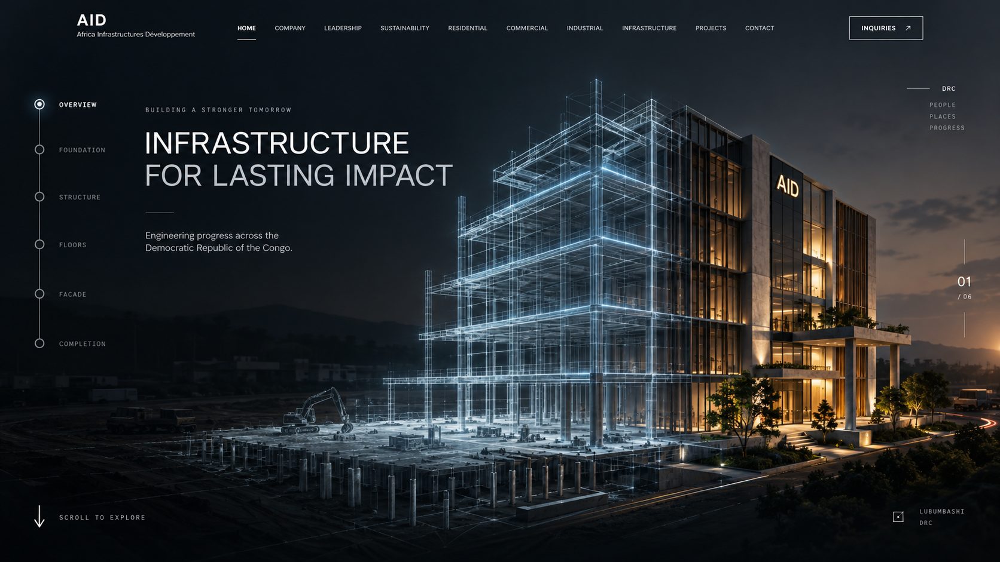

Contribute to a more connected DRC.
Support development through places and infrastructure that create opportunity. Final vision wording requires AID approval.
Learn about Africa Infrastructures Développement—its story, direction, leadership and approach to responsible development.

AID works across residential, commercial, industrial and infrastructure development in the Democratic Republic of the Congo.
Use this section to explain the company's origins, how its work has evolved, and the milestones that shaped its current capabilities.
AID’s approved founding story, key dates and milestones are still required. Do not invent a company timeline.
Support development through places and infrastructure that create opportunity. Final vision wording requires AID approval.
Respond to project needs with practical planning and coordinated execution. Final mission wording requires AID approval.
Economical solutions, sustainable practices, customer focus and ethical conduct, based on the proposal's value themes.
MILESTONE 01 · YEAR TO CONFIRM
This space will tell the story of an important moment in AID’s development, using a client-approved date and milestone description.
CONTENT PLACEHOLDER — AID TO CONFIRM DATES AND MILESTONES
An illustration of the journey behind every development, from prepared ground to a finished, working place.
Describe AID’s actual environmental practices, resource management, safety processes and community activities across Haut-Katanga.
Only documented practices and approved claims should be published. The image is illustrative and does not prove a specific AID initiative.
Named founders and senior team members should appear here with their real titles, biographies and approved photographs. No names or credentials have been invented for this draft.
Confirm the current operating presence in each location before launch.
Before structures rise, the ground has to be ready. Earthmoving and site preparation set the foundation for the work that follows.
Explore the four development verticals and equipment capability.